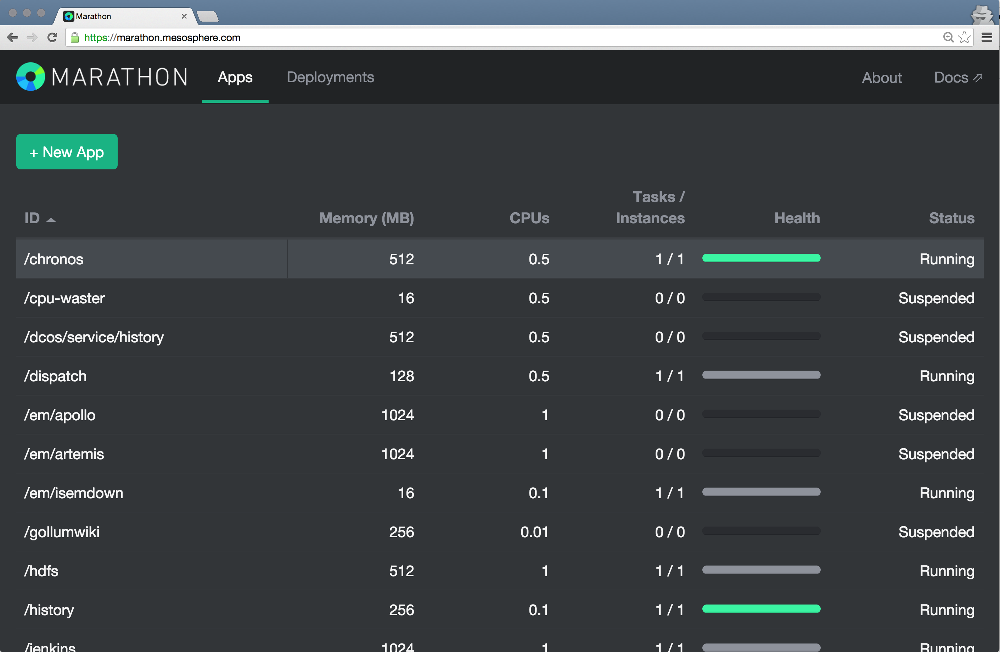

Cracking the Container Scale Problem with Apache Mesos
Connor Doyle
connor@mesosphere.io
Sunil Shah
sunil@mesosphere.io
Is there a problem?
- Failure
- Efficiency
- Programmability
Mesoswhat?
Marathon
Demo!
Mesos let us treat a cluster of nodes...

As one big computer

|
Not as individual machines |
Not as VMs |
But as computational resources like cores, memory, disks, etc.


Containerization in Mesos, a brief history
Mesos is...
A top-level Apache project |
|
A cluster resource negotiator |
|
Scalable to 10,000s of nodes |
|
Fault-tolerant, battle-tested |
|
An SDK for distributed apps |

Mesos for all the things

Mesoswhat?
Marathon
Demo!
a self-serve interface to your cluster
distributed "init" for long-running services

a private fault-tolerant PaaS

Marathon does it!
- Start, stop, scale, update apps
- Nice web interface, API
- Highly available, no SPoF
- Native Docker support
- Fully featured REST API
- Pluggable event bus
- Rolling deploy / restart
- Application health checks
- Artifact staging
Mesos & Marathon in action


Fault Tolerance
Task Failure :(


Fault Tolerance
Local Agent Failure :(


Fault Tolerance
Host or Network Failure :(


Fault Tolerance
Mesos Master Failure :(


Fault Tolerance
Scheduler Failure :(


Mesoswhat?
Marathon
Demo!
Virtual machine configuration
Get the playa-mesos virtual machine.
Add the following to /etc/dhcp/dhclient.conf to resolve DNS queries through mesos-dns.
interface "eth0" {
prepend domain-name-servers 10.141.141.10;
}
You may have to bring the interface down and back up for the change to take effect.
Launch mesos-dns in a container
http -v POST http://10.141.141.10:8080/v2/apps @demo/marathon-examples/1-mesos-dns.json
{
"id": "mesos-dns",
"cmd" : "/mesos-dns -v=2 -config=$MESOS_SANDBOX/config.json",
"container": {
"type": "DOCKER",
"docker": {
"image": "mesosphere/mesos-dns",
"network": "HOST"
}
},
"cpus": 0.25,
"mem": 256.0,
"instances": 1,
"uris": [ "/home/vagrant/demo/mesos-dns/config.json" ]
}
{
"masters": ["10.141.141.10:5050"],
"refreshSeconds": 10,
"ttl": 20,
"domain": "mesos",
"port": 53,
"resolvers": ["8.8.8.8"],
"timeout": 5
}
Launch Redis in a container
http -v POST http://10.141.141.10:8080/v2/apps @demo/marathon-examples/2-redis.json
{
"id": "redis",
"container": {
"type": "DOCKER",
"docker": {
"image": "redis:3",
"network": "HOST"
}
},
"instances": 1,
"cpus": 0.25,
"mem": 64
}
Launch a Redis frontend in a container
http -v POST http://10.141.141.10:8080/v2/apps @demo/marathon-examples/3-redis-frontend.json
{
"id": "frontend",
"container": {
"type": "DOCKER",
"docker": {
"image": "superguenter/node-redis-demo",
"network": "HOST"
}
},
"env": {
"REDIS_HOST": "redis.marathon.mesos"
},
"instances": 1,
"cpus": 0.25,
"healthChecks": [
{
"protocol": "HTTP",
"path": "/",
"portIndex": 0,
"gracePeriodSeconds": 10,
"intervalSeconds": 10,
"maxConsecutiveFailures": 3
}
]
}
Store some data
http -v GET http://10.141.141.10:PORT/set?value=apachecon2015Get some data
http -v GET http://10.141.141.10:PORT/Scale!
http -v PUT http://10.141.141.10:8080/v2/apps/frontend @scale-app.json
{
"instances": 2
}
Thanks!
Come and talk to us
P.S., we're hiring!
Check out the other Mesos talks!
- Monday 4pm: Elastic Compute for Batch Platform Using Apache Mesos, Docker
- Monday 5pm: Replatforming the Cloud and Datacenter with Apache Mesos
- Tuesday 4:20pm: The Emergence of the Datacenter Developer
- Wednesday 2:15pm: Mesos + YARN = Myriad. Why This is a Game Changer for Big Data Developers
Useful links
|
This presentation: mesosphere.github.com/presentations/apachecon-2015/containers |
|
|
Read about Marathon: github.com/mesosphere/marathon |
|
|
Try out Mesosphere on GCE: google.mesosphere.io |
|
|
Come work with us: mesosphere.io/jobs |